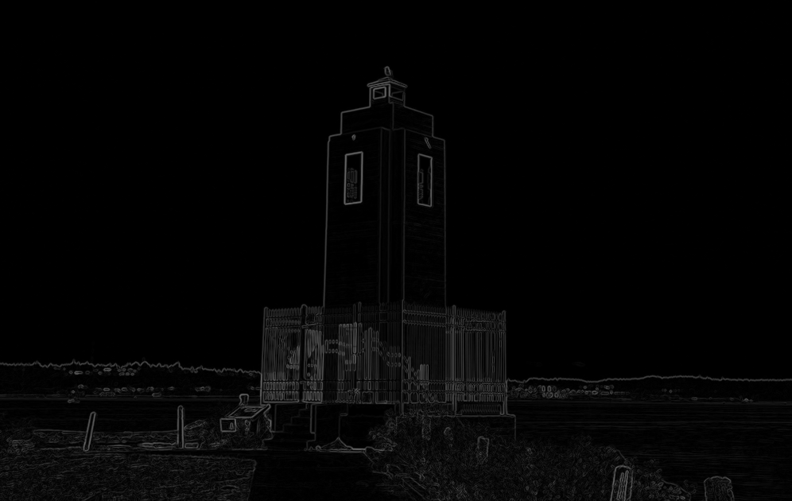

Block Decomposition - Learning Reflection
Author: Tony Fu
Date: August 18, 2023
Device: MacBook Pro 16-inch, Late 2021 (M1 Pro)
Reference: Chapter 2.3 - 2.7 Digital Image Processing with C++: Implementing Reference Algorithms with the CImg Library by Tschumperlé, Tilmant, Barra
1. CImg Template Class
The CImg library is a template-based image manipulation library, and its template argument specifies the pixel type. By default, if you don't specify the template argument, it's instantiated with float.
So when you declare an image like this:
CImg<> img("image.png");
It is equivalent to:
CImg<float> img("image.png");
You can specify a different type if you want, such as unsigned char, int, etc. But if you simply use CImg<>, then it defaults to using float.
CImg<T> is a part of the CImg library, a popular, open-source C++ toolkit that facilitates the creation and manipulation of images. The templated class CImg<T> can represent images with pixels of different types (e.g., float, int, etc.).
Below are some commonly used constructors for CImg<T>:
- Default Constructor:
CImg<T>();
This constructs an empty image.
- Constructor with Dimensions:
CImg<T>(const unsigned int width, const unsigned int height, const unsigned int depth = 1, const unsigned int spectrum = 1, const T& value = 0);
* `width`: Width of the image.
* `height`: Height of the image.
* `depth`: Depth of the image (default is 1 for 2D images).
* `spectrum`: Number of channels (e.g., 3 for RGB image).
* `value`: Initial value for all pixels.
- Copy Constructor:
CImg<T>(const CImg<T>& img);
Constructs a copy of the given image img.
- Constructor from File:
CImg<T>(const char* filename);
Constructs an image by reading from a file specified by filename.
- Constructor from Data:
CImg<T>(const T* data, const unsigned int width, const unsigned int height, const unsigned int depth = 1, const unsigned int spectrum = 1, const bool shared = false);
* `data`: Pointer to pixel data.
* `width`, `height`, `depth`, `spectrum`: Same as above.
* `shared`: If `true`, the data is shared with the original pointer without making a separate copy.
- Constructor from Expression:
CImg<T>(const char* expression, const char* variable_name = 0, const T& variable_value = 0, const char* variable_name1 = 0, const T& variable_value1 = 0);
This constructor creates an image from a mathematical expression, allowing for variable substitutions.
2. Reading Command-Line Parameters
The cimg_usage() and cimg_option() functions are used to handle command-line arguments. Here's a brief description of each function:
-
cimg_usage(const char *const format, ...): This function is typically used to print a description of your program when it's invoked from the command line. -
cimg_option(const char *const opt, type_def variable, const char *const format, ...): This function is a command-line option parser. It's used to handle options passed to your program when it's invoked from the command line. Here's a breakdown of the parameters: opt: the name of the command-line option.variable: the default value that will be assigned to the variable if the corresponding command-line option is not provided.format: a string that may contain a description of what the option does (this will be printed if a specific help option is invoked, like--help).
Here's a simple example showing how you might use these functions:
#include "CImg.h"
int main(int argc, char **argv) {
cimg_usage("My simple program that does XYZ.");
int my_option1 = cimg_option("-o1", 0, "An optional parameter that affects behavior.");
int my_option2 = cimg_option("-o2", 99, "Another optional parameter that affects behavior.");
// Rest of the program
}
If the user runs the program with the options, like ./my_program -o1 5, the my_option1 variable will be set to 5, and the my_option2 variable will be set to the default value of 99.
If they run the program with the --help option, they will see the usage string followed by the options descriptions.
3. Get vs. Non-Get Methods in Image Processing with CImg
In image processing using CImg, it's really helpful to know whether a method is going to give you a new object (a get method) or change the one you already have (a non-get method). CImg has both types for most of its methods:
- Get Methods: These create a new object with the changes you want, leaving the one you started with the same. Like
CImg<float>::get_blur(), which makes a new blurred image but doesn't touch the original. - Non-get Methods: These change the object you call them on and usually give you back a reference to that changed object. For example,
CImg<float>::blur()changes the image and gives you back a reference to it.
Here's an example to show how this works:
CImg<> lum = img.get_norm().blur(sigma).normalize(0, 255);
In this code, get_norm makes a new image (make it gray-scale by taking the L2-norm of the RGB channel), and blur and normalize change it and give you back references. This way of doing things makes it easy to chain operations together and save memory.
Resutls:
-
Original Image

-
Luminance Image
4. Gradient Magnitude Computation
Gradient is computed using the get_gradient() method. The gradient is computed using the centered finite differences by default. We will discuss the spatial filtering in Chapter 5. The method returns a CImgList object, which is a list of images in the order you specify. In this case, we want the gradient in the x and y directions, so we specify "xy" as the argument.
CImgList<> grad = lum.get_gradient("xy");
Then we compute the gradient magnitude using the following formula:
CImg<> normGrad = (grad[0].get_sqr() += grad[1].get_sqr()).sqrt();
Notice the use of the "non-get" += operator, which prevents the creation of an unnecessary temporary image.
Results:
- Gradient Magnitude Image 
5. Block Decomposition
See Algorithm 1 in the book for the pseudocode. Here's my breakdown:
-
Accessing the Current Block: The loop iterates through a list of blocks (
blocks), where each block is represented by aCImg<int>object containing four integers representing the coordinates of the top-left and bottom-right corners of the block (x0, y0) and (x1, y1). (Yes,CImgcan be used as 1D vectors usingCImg<int>::vector(). -
Checking Conditions: For each block, the code checks two conditions: (a) If the maximum value of the
normGradimage, when cropped to the current block, is greater than a given threshold. (b) If both the width and height of the block are greater than 8. -
Splitting the Block: If both conditions are met, the block is divided into four equal parts. The new blocks are created by calculating the midpoint of the original block (xc, yc) and using these coordinates to define the four new blocks.
-
Updating the List of Blocks: The four new blocks are added to the
blockslist using themove_to()method to avoid creating unnecessary copies. The original block is then removed from the list using theremove()method. -
Continuing Iteration: If the conditions are not met, the loop simply moves on to the next block by incrementing the index
l.
6. Loop Iteration in CImg
The following macros greatly simplify writing loops that iterate over various parts of an image:
- cimg_for(img,ptr,T): Iterates over all pixels of an image.
cimg_for(img, ptr, T) {
// Do something with ptr, a pointer to the pixel value.
}
- cimg_forX(img,x): Iterates over the width of an image.
cimg_forX(img, x) {
// x is the x-coordinate, ranging from 0 to img.width() - 1.
}
For macro cimg_forX(img,x), you do not need to declare x as an integer before using it in the loop. The macro itself takes care of that. If there is already a variable named x in the same scope where you're using this macro, you can place the code inside a different scope.
- cimg_forY(img,y): Iterates over the height of an image.
cimg_forY(img, y) {
// y is the y-coordinate, ranging from 0 to img.height() - 1.
}
- cimg_forZ(img,z): Iterates over the depth of an image (for 3D images).
cimg_forZ(img, z) {
// z is the z-coordinate, ranging from 0 to img.depth() - 1.
}
- cimg_forC(img,c): Iterates over the channels (spectrum) of an image.
cimg_forC(img, c) {
// c is the channel index, ranging from 0 to img.spectrum() - 1.
}
- cimg_forXY(img,x,y): Iterates over both the width and height of an image.
cimg_forXY(img, x, y) {
// Do something with x and y coordinates.
}
- cimg_forXYZ(img,x,y,z): Iterates over width, height, and depth of a 3D image.
cimg_forXYZ(img, x, y, z) {
// Do something with x, y, and z coordinates.
}
- cimg_forXYZC(img,x,y,z,c): Iterates over all dimensions, including channels.
cimg_forXYZC(img, x, y, z, c) {
// Do something with x, y, z coordinates and channel c.
}
7. Drawing Blocks
blocks is a vector of (x0, y0, x1, y1) coordinates. In the following code, we iterate through each block. We use get_crop() and resize() the cropped image to 1x1 pixels, which is the average color of the block. Then we draw a rectangle using the draw_rectangle() method.
// Rendering of the decomposition.
CImg<unsigned char> res(img.width(), img.height(), 1, 3, 0);
CImg<int> coords(img.width(), img.height(), 1, 4, 0);
cimglist_for(blocks, l)
{
CImg<int> &block = blocks[l];
int
x0 = block[0],
y0 = block[1],
x1 = block[2],
y1 = block[3];
CImg<unsigned char> color = img.get_crop(x0, y0, x1, y1).resize(1, 1, 1, 3, 2);
res.draw_rectangle(x0, y0, x1, y1, color.data(), 1);
coords.draw_rectangle(x0, y0, x1, y1, block.data());
}
There are two CImg objects here:
res: This is the final image that will be displayed. It is initialized to all black pixels.coords: This maps each pixel to the block it belongs to. It will be used later for user interaction.
// Adding black borders.
res.mul(1 - (res.get_shift(1, 1, 0, 0, 0) - res).norm().cut(0, 1));
This above is a clever way to add black borders:
Part 1: Edge Detection
The first part of the expression is a kind of high-pass edge detection filter that calculates the difference between adjacent pixels in the image, thereby emphasizing sharp changes or edges. The expression for this part is:
Here, calculates the difference between adjacent pixels. By using the min and max functions, this difference is clipped to the range , with 0 representing no change (no edge) and 1 representing a large change (an edge).
-
res
-
mask
Part 2: Multiplication
The second part of the expression involves multiplying the original pixel value with the edge value obtained in Part 1. This has the effect of enhancing the detected edges in the image. The expression for this part is:
- Block Decomposition
The book also propose two other ways to render the borders: CImg<unsigned char>::fill() and cimg_for3x3.
8. GUI
The CImgDisplay class is used to create a window and display an image. It has the following constructor:
CImgDisplay disp(const CImg<T>& img, const char* title = 0, const int normalization_type = 3);
The normalization type is used to specify how the image is normalized when displayed. The following table shows the different options:
| Normalization Value | Description |
|---|---|
| 0 | No normalization applied. |
| 1 | Automatic linear normalization to the range. |
| 2 | A one-time linear normalization with parameters calculated at the first display. These are then reused for subsequent images in the same window. Ideal for preserving consistent gray levels. |
| 3 | Default automatic mode, with behavior depending on the type. |
The following code creates a window and displays the image res:
// Start the interactive viewer.
CImgDisplay disp(res, "CImg Tutorial: Block Decomposition", 0);
unsigned char white[] = {255, 255, 255}, black[] = {0, 0, 0};
while (!disp.is_closed() && !disp.is_keyESC())
{
int
x = disp.mouse_x(),
y = disp.mouse_y();
if (x >= 0 && y >= 0)
{
// Get the coordinates of the block under the mouse position.
int
x0 = coords(x, y, 0),
y0 = coords(x, y, 1),
x1 = coords(x, y, 2), y1 = coords(x, y, 3),
xc = (x0 + x1) / 2, yc = (y0 + y1) / 2;
// Get the block and its gradient.
CImg<unsigned char>
pImg = img.get_crop(x0, y0, x1, y1).resize(128, 128, 1, 3, 1),
pGrad = normGrad.get_crop(x0, y0, x1, y1).resize(128, 128, 1, 3, 1).normalize(0, 255).map(CImg<unsigned char>::hot_LUT256());
// Display the block and its gradient.
(+res).
draw_text(10, 3, "X, Y = %d, %d", white, 0, 1, 24, x, y).
draw_rectangle(x0, y0, x1, y1, black, 0.25f).
draw_line(74, 109, xc, yc, white, 0.75, 0xCCCCCCCC).
draw_line(74, 264, xc, yc, white, 0.75, 0xCCCCCCCC).
draw_rectangle(7, 32, 140, 165, white).
draw_rectangle(7, 197, 140, 330, white).
draw_image(10, 35, pImg).
draw_image(10, 200, pGrad).
display(disp);
}
disp.wait(); // Wait for an user event
if (disp.is_resized())
disp.resize(disp);
}
Read a book for more details. Note that (+res) is a trick used to make a copy of the image res without creating a new object.